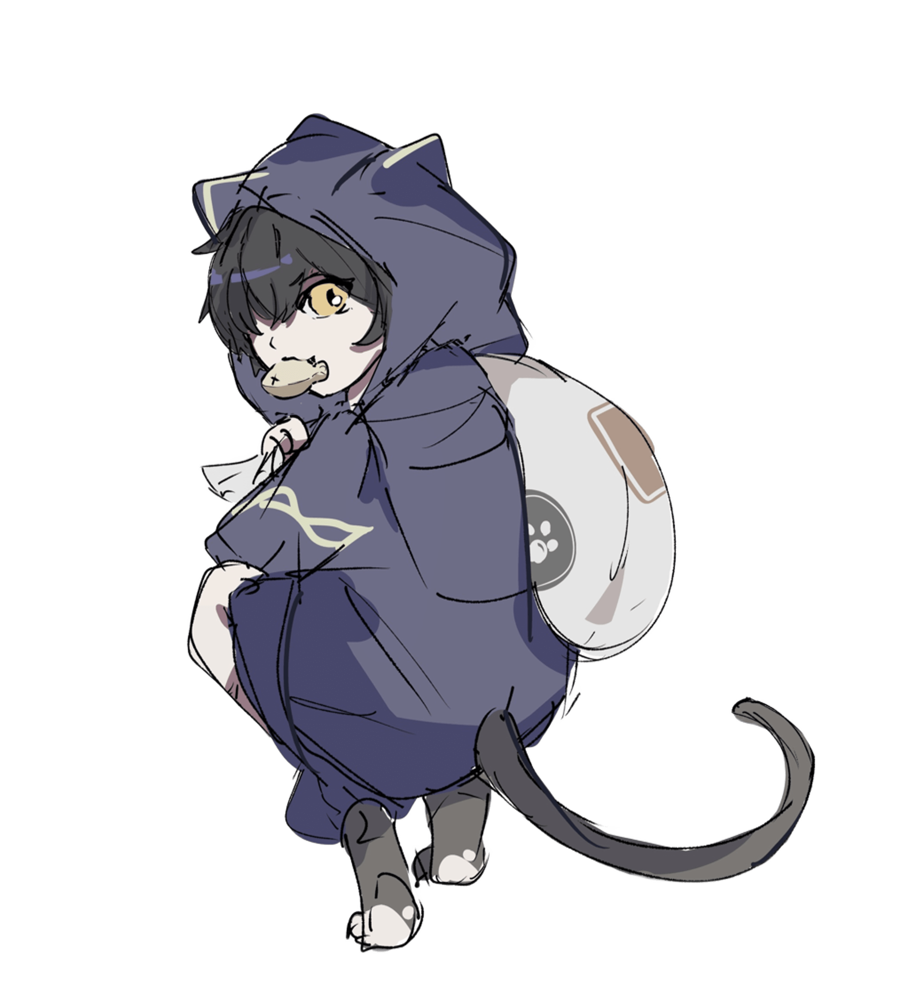

性格
その名の通り、ネコのような性格。昼寝をしていたかと思えば、屋根を飛び移って走り回り、気まぐれに人の邪魔をする。嫌いだから邪魔をするのではなく、好きだから邪魔をするのである。興味のない相手には極端に無関心で、名前すら覚えていない。
仕事について
借金や盗まれたもの、大切な記憶。どんなものであれそれが「回収」できるものであれば、彼は身軽に街を駆けて依頼人のために取り戻してくれる。ただし彼は忘れっぽくてうっかりしているので、回収したいものの名前や場所をきちんと指定しないと、死んだネズミの死骸などを得意げに手渡される。
過去
昔は文字通りの獣のように、白葬街の路地裏で暮らしていた。人間としての常識はおろか、言語的な意思疎通ですら出来ず、それらは最近身に付けたものである。
いつも通りふらふらと屋根を駆けていたら、無明と名乗る男性に首根っこを掴み上げられた。それから彼に人としての振る舞い方を叩き込まれ、猫から人になった。数年前に手続き上の飼い主がシロに変わったらしい。
能力
人並外れた瞬発性と柔軟性を持つ。足の速さでは誰にも負けることがなく、高いところから飛び降りても怪我をしない。その代わりに相当に体重が軽く、殴ったり蹴ったりしてもまともな危害を加えることができない。